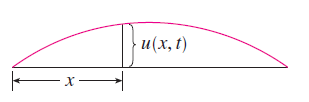

Partial derivatives occur in partial differential equations that express certain physical laws.
Laplace Equation \[ \frac{\partial^2 u}{\partial x^2}+\frac{\partial^2 u}{\partial y^2}=0 \] They play a role in problems of heat conduction, fluid flow, and electric potential.
| Example |
| Show that the function \(u(x, y) = e^x \sin y\) is a solution of Laplace’s equation. |
| \[ u_x = e^x \sin y \quad\quad u_y = e^x \cos y \] |
| \[ u_{xx} = e^x \sin y \quad\quad u_{yy} = -e^x \sin y \] |
| So |
| \[ u_{xx} + u_{yy} = e^x \sin y - e^x \sin y = 0 \] |
| Therefore \(u\) satisfies Laplace’s equation. |
The Wave Equation
\[ \frac{\partial^2 u}{\partial t^2} = a^2 \frac{\partial^2 u}{\partial x^2} \]
describes the motion of a waveform (a sound wave, a light wave, or a wave traveling along a vibrating string).

For instance, if \(u(x, t)\) represents the displacement of a vibrating violin string at time \(t\) and at a distance \(x\) from one end of the string, then \(u(x, t)\) satisfies the wave equation. Here the constant \(a\) depends on the density of the string and on the tension in the string.
Example
Verify that the function \(u(x, t) = \sin(x - at)\) satisfies the wave equation.